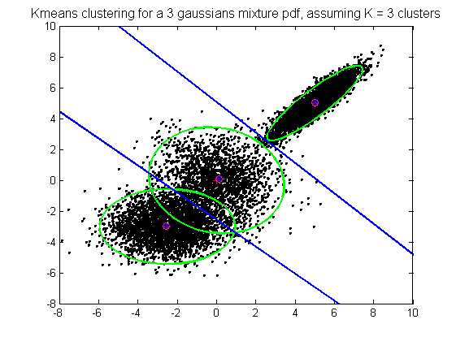
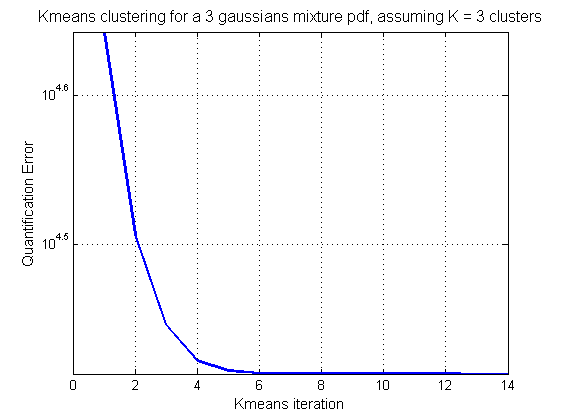
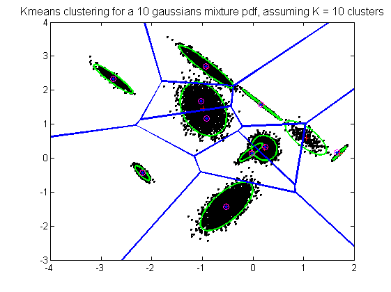
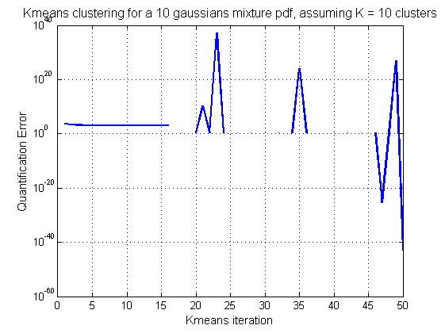
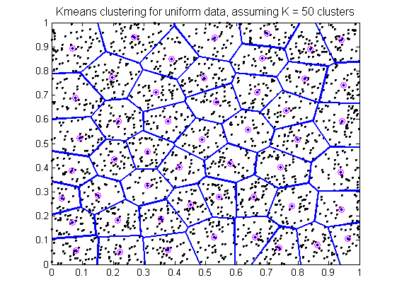
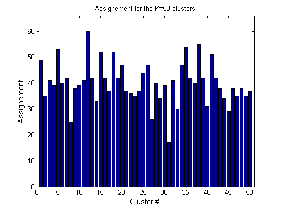
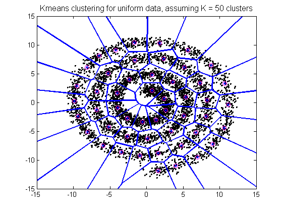

Contents
Example 1: Cluster a mixture of 3 Gaussians mixture %%
clear,close all
K = 3;
mu = cat(3 , [-2.5 ; -3] , [0 ; 0] ,[ 5 ; 5]);
sigma = cat(3 , [2 0; 0 1] , [2 -.2; -.2 2] , [1 .9; .9 1] );
p = cat(3 , [0.3] , [0.2] , [0.5]);
N = 10000;
[Z , index] = sample_mvgm(N , mu , sigma , p);
[x , y] = ndellipse(mu , sigma);
options.K = 3;
options.max_ite = 50;
options.num_threads = 2;
tic,[centroids, dis, assign , nassign , qerr] = yael_kmeans(Z , options);,toc
figure(1)
plot(Z(1 , :) , Z(2 , :) , 'k+' , x , y , 'g' , 'markersize' , 2 , 'linewidth' , 2);
hold on
plot(reshape(mu(1 , : , :) , 1 , K) , reshape(mu(2 , : , :) , 1 , K) , 'r+' , centroids(1 , :) , centroids(2 , :) , 'mo', 'markersize' , 6);
h = voronoi(double(centroids(1 , :)) , double(centroids(2 , :)) );
set(h , 'linewidth' , 2)
h = title(sprintf('Kmeans clustering for a %d gaussians mixture pdf, assuming K = %d clusters' , K , options.K));
set(h , 'fontsize' , 12)
hold off
figure(2)
h = semilogy(1:options.max_ite , qerr);
ylabel('Quantification Error', 'fontsize' , 11)
xlabel('Kmeans iteration' , 'fontsize' , 11)
set(h , 'linewidth' , 2)
h = title(sprintf('Kmeans clustering for a %d gaussians mixture pdf, assuming K = %d clusters' , K , options.K));
set(h , 'fontsize' , 12)
grid on
Elapsed time is 0.090960 seconds.
 
Example 2: Cluster a mixture of K Gaussians mixture %%
d = 2;
K = 10;
clust_spread = 0.1;
N = 20000;
[mu , sigma , p] = gene_mvgm(d , K , clust_spread);
[Z , index] = sample_mvgm(N , mu , sigma , p);
[x , y] = ndellipse(mu , sigma);
options.K = K;
options.init_random_mode = 0;
options.normalize_sophisticated_mode = 0;
options.BLOCK_N1 = 1024;
options.BLOCK_N2 = 1024;
options.seed = 1234543;
options.num_threads = -1;
tic,[centroids, dis, assign , nassign , qerr] = yael_kmeans(single(Z) , options);,toc
figure(3)
plot(Z(1 , :) , Z(2 , :) , 'k+' , x , y , 'g' , 'markersize' , 2 , 'linewidth' , 2);
hold on
plot(reshape(mu(1 , : , :) , 1 , K) , reshape(mu(2 , : , :) , 1 , K) , 'r+' , centroids(1 , :) , centroids(2 , :) , 'mo', 'markersize' , 6);
h = voronoi(double(centroids(1 , :)) , double(centroids(2 , :)) );
set(h , 'linewidth' , 2);
h = title(sprintf('Kmeans clustering for a %d gaussians mixture pdf, assuming K = %d clusters' , K , options.K));
set(h , 'fontsize' , 12);
hold off
figure(4)
h = semilogy(1:options.max_ite , qerr);
ylabel('Quantification Error', 'fontsize' , 11)
xlabel('Kmeans iteration' , 'fontsize' , 11)
set(h , 'linewidth' , 2)
h = title(sprintf('Kmeans clustering for a %d gaussians mixture pdf, assuming K = %d clusters' , K , options.K));
set(h , 'fontsize' , 12)
grid on
Elapsed time is 0.028479 seconds.
Warning: Negative data ignored
Warning: Negative data ignored
Warning: Negative data ignored
 
Example 3: Cluster uniform random data %%
d = 2;
N = 2000;
Z = rand(d , N);
options.K = 50;
options.init_random_mode = 0;
options.normalize_sophisticated_mode = 0;
options.BLOCK_N1 = 1024;
options.BLOCK_N2 = 1024;
options.seed = 1234543;
options.num_threads = -1;
tic,[centroids, dis, assign , nassign , qerr] = yael_kmeans(single(Z) , options);,toc
figure(5)
plot(Z(1 , :) , Z(2 , :) , 'k+' , 'markersize' , 2 , 'linewidth' , 2);
hold on
plot(centroids(1 , :) , centroids(2 , :) , 'mo', 'markersize' , 6);
h = voronoi(double(centroids(1 , :)) , double(centroids(2 , :)) );
set(h , 'linewidth' , 2);
h = title(sprintf('Kmeans clustering for uniform data, assuming K = %d clusters' , options.K));
set(h , 'fontsize' , 12);
hold off
figure(6)
bar(1:options.K , nassign)
ylabel('Assignement', 'fontsize' , 11)
xlabel('Cluster #' , 'fontsize' , 11)
axis([-0.0 , options.K+0.5 , 0 , 1.1*max(nassign)])
h = title(sprintf('Assignement for the K=%d clusters' ,options.K));
Elapsed time is 0.011166 seconds.
 
Example 4: Cluster spiral data %%
d = 2;
N = 5000;
Z = spiral2d(N);
options.K = 50;
options.init_random_mode = 0;
options.normalize_sophisticated_mode = 0;
options.BLOCK_N1 = 1024;
options.BLOCK_N2 = 1024;
options.seed = 1234543;
options.num_threads = 0;
tic,[centroids, dis, assign , nassign , qerr] = yael_kmeans(single(Z) , options);,toc
figure(7)
plot(Z(1 , :) , Z(2 , :) , 'k+' , 'markersize' , 2 , 'linewidth' , 2);
hold on
plot(centroids(1 , :) , centroids(2 , :) , 'mo', 'markersize' , 6);
h = voronoi(double(centroids(1 , :)) , double(centroids(2 , :)) );
set(h , 'linewidth' , 2);
h = title(sprintf('Kmeans clustering for uniform data, assuming K = %d clusters' , options.K));
set(h , 'fontsize' , 12);
hold off
Elapsed time is 0.057073 seconds.
